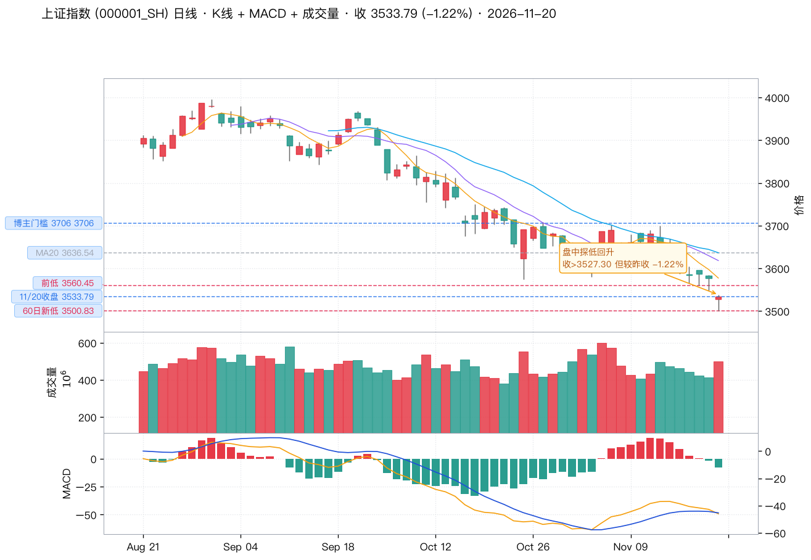
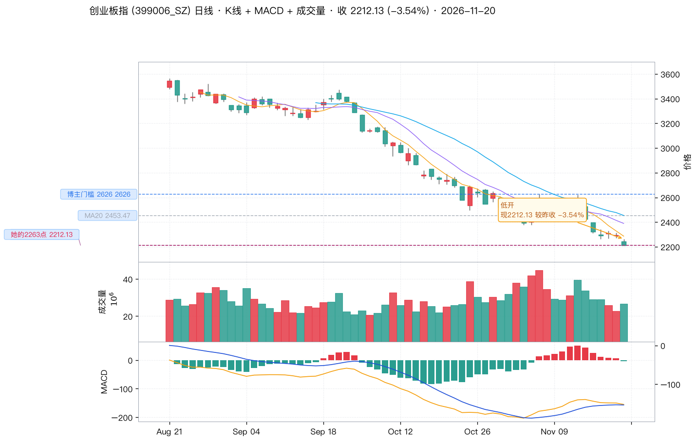
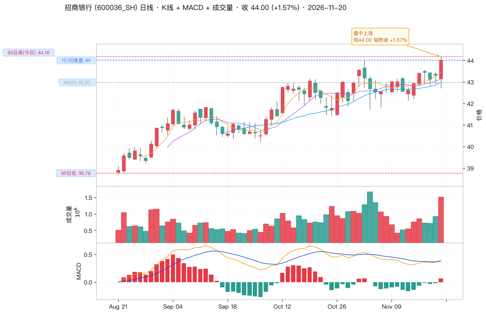
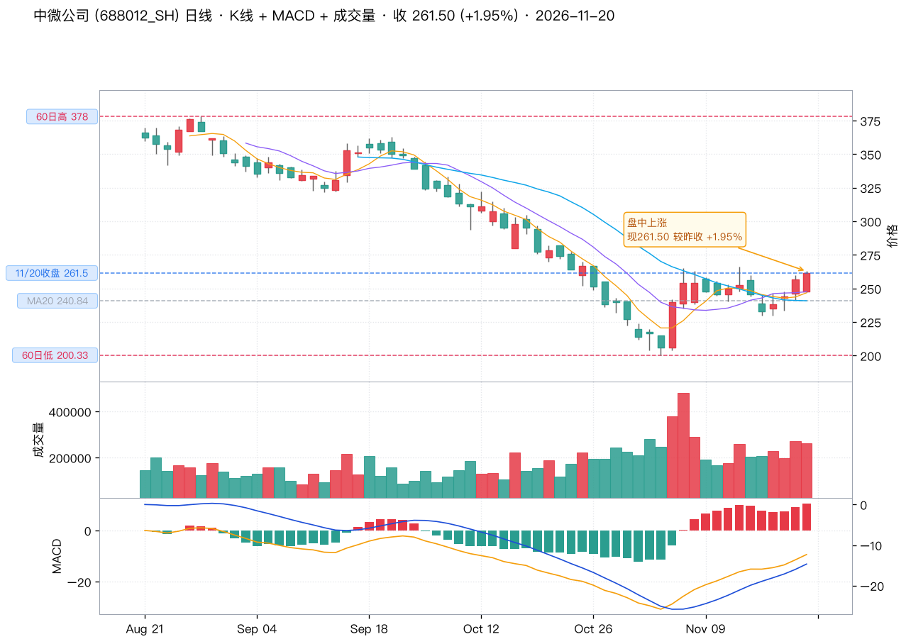
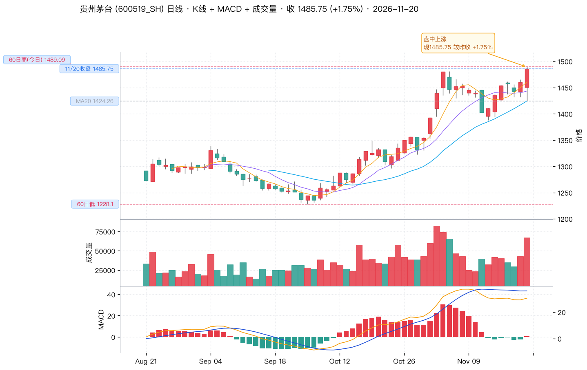

🟢 09:49「工行，建行改写新高」—— 全中：工行 +3.30%、建行 +3.07%，两只都创年内新高，农行 +1.57% 同创新高；申万一级只有银行收正（+0.22%）。 但另一面更重：创业板最低 2212.13 = 收盘，跌破她的 2263 点（差 51.61 点）；沪指最低 3500.83 又是 60 日新低； 跌 5236 家、下跌放量 1,176 亿（+9.0%）。 11/19 点名的封装 / 光刻胶 / 设备今天全被砸。 → 她 11/21 早上自认「抄C5抄成了股Z」；只做银行/红利 + 站上 MA20 的半导体龙头，别的都等。
| 时间 | 信号 | 原文 | 判读 / 日线实测 |
|---|---|---|---|
| 11/20 09:43 | ⚪ 亚太播报 | 截止目前看，日本股市跌4.29%；韩国股市跌4.31%，台湾省股市跌4.95%。 | 盘中口径（09:43 亚市开盘一小时）。收盘实为日经 −5.06%、韩国 −5.21%、台湾 −6.23% —— 比她报的还多跌，方向一致。 |
| 11/20 09:49 | 🟢🟢 板块点名 | 工行，建行改写新高。 | 分毫不差：工行最高 9.49、建行最高 12.78，双双创年内新高；收盘 +3.30% / +3.07%，农行 +1.57% 同创年内新高。 |
| 11/20 10:39 | 🟡 前瞻 | 2027年，年度高低点的判断，我会提前分析……但是我只给喜欢我的人看。 | 要发 2027 年度高低点判断（互动 1.9 万，当日第一）。不构成可执行信号，等内容。 |
| 11/20 23:16 | ⚪ 外盘盘中 | 美国市场现在是道指涨375点，纳指跌306点。科技股领跌！ | 盘中口径（「现在」）。收盘为道指 −949.73、纳指 −1261.47、标普 −265.44。 |
| 11/21 05:52 | ⚪ 外盘收盘 | 周五晚美国股市全线大跌，收盘道指下跌949点，纳指跌1261点、标普下跌265点。 | 三个数字分毫不差：−949.73 / −1261.47 / −265.44。连续第 5 次外盘播报全中。 |
| 11/21 06:10 / 06:29 | 🔴 自我检讨 | 本来高位己经撤离了…………坏了，我又陷进去了！ / 多少次暴风雨……这次还是老样子，先想办法如何活下去吧！ | 罕见地承认自己被套。她 6/8 高位撤离是本系列的标杆动作，这次「又陷进去了」= 高位没跑、低位抄底也套。 |
| 11/21 06:37 / 06:46 | 🔴🔴 框架失效 | 抄C5抄成了股Z……难道这就是命？ / 技术分析失效的情况下，只能靠风险控制或靠意志。 | 本期最重要的一条：她的 C5 抄底被自己证伪（11/20 创业板跌破 2263 点），并给出替代方案：技术面失效时靠风控和纪律，不是靠点位。 |
| 11/21 09:39 | ⚪ 情绪 | 慌啥子嘛？ | 情绪帖，无新信号。 |

开 3527.30 / 高 3538.27 / 低 3500.83 / 收 3533.79。 最低 3500.83 = 又是 60 日新低（前低 3547.94 再破），尾盘自低点回拉 32.96 点；3706 差 172.21 点（4.65%），MA20 3636.54 失守。

开 2244.06 / 高 2263.30 / 低 = 收 2212.13。 最低=收盘，全天无承接，直接破掉她的 2263 点（差 51.61 点、2.28%），并创新 60 日低；2626 差 413.87 点（15.76%），MA20 2453.47 远在头顶。
| 板块 | 11/20 收盘实测 | 博主口径 / 打法 |
|---|---|---|
| ① 银行 / 红利 首选 · 唯一正收益 |
池 6 只 6 涨 0 跌，均值 +2.23%，额 202 亿 工商银行 +3.30%、中国银行 +2.72%、交通银行 +2.63% |
她 09:49 点名「工行，建行改写新高」，兑现：工行 +3.30%、建行 +3.07%、农行 +1.57% 三家都创年内新高。中国石油 +4.67%、长江电力 +2.40% 同属红利线。 只做银行 + 高股息，不做题材。 |
| ② 半导体制造 + 设备 次选 · 只做站上 MA20 的龙头 |
设备池 1 涨 10 跌，均值 -4.02%；但 中芯国际 +2.63%、粤芯半导体 +1.97%、中微公司 +1.95%、京东方A +1.39% |
科技里今天唯一还活着的分支（对比：光刻胶 -6.15%、封装 -8.11%、CPO -4.91%）。中微公司收 261.50、站上 MA20 240.84、放量 112%、MACD 柱 +10.59 → 设备池 11 只里 4 只站上 MA20。只做这类，不碰池平均。 |
| ③ 白酒核心资产（茅台） 防御 · 逼近新高 |
白酒池 -2.10%（1 涨 7 跌） 茅台 +1.75% / 五粮液 −1.16% / 山西汾酒 −1.21% |
池是跌的，只有茅台是红的：最高 1489.09 = 60 日新高（今日），收 1485.75，放量 156%、额 98 亿，站上 MA20 1424.26。 她的底仓方向 → 防御垫，不加仓。 |
| 代码 名称 | 收盘 | 涨跌 | 成交额 | 关键位 | 实测印证 / 动作 |
|---|---|---|---|---|---|
| 600036 招商银行 | 44.00 | +1.57% | 65.8 亿 | MA20 42.97 · 60 日高 44.16（今日） | 她 09:49 点名方向的流动性龙头：最高 44.16 = 60 日新高，收 44.00 几乎收在最高，放量 159%、额 66 亿。 站上 MA5/MA10/MA20 42.97、MACD 柱 +0.06 → 底仓垫，回调不破 MA20 可续，破 MA20 减仓。 |
| 688012 中微公司 | 261.50 | +1.95% | 66.3 亿 | MA20 240.84 · 60 日低 200.33 · 60 日高 378.00 | 科技里唯一站上 MA20 的主线龙头（连续三日站上：244 → 256 → 261），放量 112%、额 66 亿、MACD 柱 +10.59。 回踩 MA20 240.84 不破可分批，破位放弃。 |
| 600519 贵州茅台 | 1485.75 | +1.75% | 98.0 亿 | MA20 1424.26 · 60 日高 1489.09（今日） | 今日创 60 日新高：最高 1489.09、收 1485.75，放量 156%、额 98 亿，站上 MA5/MA10/MA20 1424.26、MACD 柱 +0.50。 但白酒池整体 −2.10%，是她自己的底仓 → 只当防御垫，不当进攻。 |

高 44.16 / 低 42.70 / 收 44.00，额 65.8 亿。 最高 44.16 = 60 日新高，收在最高附近；站上 MA5 43.46 / MA10 43.14 / MA20 42.97，60 日低 38.76 在下方。

高 262.83 / 低 247.22 / 收 261.50，额 66.3 亿。 站上 MA5 246.77 / MA10 247.60 / MA20 240.84；60 日高 378.00 在左上（距今 30.8%），60 日低 200.33 在下方 —— 全市场唯一没破位的主线龙头。

高 1489.09（60 日新高）/ 低 1423.90 / 收 1485.75，额 98.0 亿（全场最大之一）。 放量 156% 上攻后小幅回落收 1485.75，仍站上 MA20 1424.26。
| 项 | 博主口径 | 实测 / 处理 |
|---|---|---|
| 11/20 09:49「工行，建行改写新高」 分毫不差 | 工行，建行改写新高。 | 工行最高 9.49、建行最高 12.78，双双创年内新高；收盘 +3.30% / +3.07%，农行 +1.57% 同创年内新高。本期最硬的核验，且是唯一带方向且可执行的点名。 |
| 11/21 05:52 外盘三数字 分毫不差 | 道指下跌949点，纳指跌1261点、标普下跌265点 | 11/20 实测道指 −949.73、纳指 −1261.47、标普 −265.44，三个数字全部对上。外盘播报第 5 次全中。 |
| 11/17「本周2263点可以了，接下来等吃肉了」 已被证伪 | 本周 2263 点可以了，接下来等吃肉了！ | 11/20 创业板最低=收盘 2212.13，直接跌破 2263 点（差 51.61 点、2.28%），并创新 60 日低。 她自己 11/21 06:37 承认「抄C5抄成了股Z」——是本系列首次自证点位失效。 |
| 11/19 10:55「封装/光刻胶/半导体设备局部走红」 一日游 | 封装，光刻胶，半导体设备等局部走红 | 11/20 先进封装 -8.11%（长电 −9.50%）、光刻胶 -6.15%、半导体设备 -4.02% —— 三个方向隔天全绿转全跌，只红了一天。 |
| 11/20 09:43 亚太三数字 盘中口径 | 日本股市跌4.29%；韩国股市跌4.31%，台湾省股市跌4.95% | 09:43 是亚市开盘一小时，盘中口径无法用日线核验。收盘实为日经 −5.06%、韩国 −5.21%、台湾 −6.23%，方向一致、跌幅更大。 |
免责声明：公开微博整理 + 技术面统计，不构成投资建议；「3 板块 + 3 个股」为博主观点 + 实测强度归纳。
报告生成：2026-11-20 收盘版（11/21 早间复盘） · 数据源 weibo skill + Tushare Pro 日线 ·
脚本 collect_tushare_20261120.py / collect_pools_20261120.py /
collect_mkt_20261120.py / make_wu2198_charts_20261120.py /
gen_wu2198_report_20261120.py。